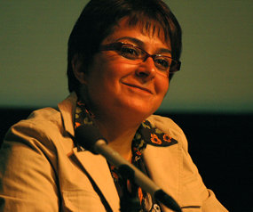
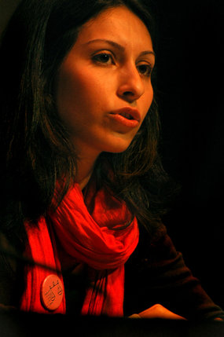

پذيرش > سایت نوشته ها > جنبش زنان ایران، جنبشی فراسوی یک حرکت محلی
 نوزدهمین همایش سالانه بنیاد پژوهشهای زنان نوزدهمین همایش سالانه بنیاد پژوهشهای زنان

 جنبش زنان ایران، جنبشی فراسوی یک حرکت محلی جنبش زنان ایران، جنبشی فراسوی یک حرکت محلی
24 تیر 1387 - رادیو زمانه /لوازند - نسخه قابل چاپ
نوزدهمین همایش سالانه «بنیاد پژوهشهای زنان» امسال از چهارم تا ششم جولای برابر با ۱۳ تا ۱۵ تیردر حالی در شهر برکلی در شمال ایالت کالیفرنیا برگزار میشد که جنبش زنان ایران بیش از هر زمان دیگری در کانون توجهات داخلی و خارجی قرار داشته و چنان که در بیانیه افتتاحیه همایش نیز ذکر گردید، بسیاری از زنان معتقدند که دیگر زمان آن رسیده که از جنبش زنان به عنوان جنبشی مستقل و فراسوی یک حرکت محلی تقدیر شود.
بنیاد پژوهشهای زنان که خود را سازمانی غیردولتی و فارغ از هرگونه وابستگی مذهبی یا سیاسی معرفی میکند، در سال ۱۹۹۰ به همت جمعی از زنان اندیشمند ایرانی در شهر بوستون امریکا تاسیس شد و از آن زمان تا کنون سالانه همایشی را در یکی از شهرهای امریکای شمالی یا اروپا برگزار میکند و در آن به بررسی وضعیت زنان ایرانی در داخل و یا خارج از ایران میپردازد. عنوان همایش امسال «نیازهای اساسی زنان ایرانی در زمان حال» بود.
روز اول
برنامه روز اول با بیانیه کمیته محلی آغاز گشت و سپس جایزه بنیاد «حامد شهیدیان» توسط خانم ناهید شهیدیان به ثمینه طباطبایی به خاطر تحقیقی تحت عنوان «بررسی تصویر زن در اثری از غزاله هدایت: ویدوآرتییست ایرانی» تقدیم گردید.
شری موراگا، شاعر، نویسنده، و فعال حقوق زنان که نامی شناخته شده در بین فمینیستهای رنگینپوست در امریکاست و خود اصلیتی مکزیکی- امریکایی دارد، اولین سخنران همایش امسال بود. خانم موراگا بر عدم توجه فمینیسم سفید طبقه متوسط امریکایی و جوامع غربی به وضعیت زنان مهاجر و کشورهای جهان سوم تاکید کرد و گردهماییهایی از قبیل این همایش را مکانی مناسب برای تبادل نظر زنان کشورهای در حال توسعه دانست که باید فمینیسمی متعلق به خود را تعریف کنند.
در ادامه برنامههای روز اول، خانم پرتو نوریعلا از «لزوم شکستن الگوی زن سنتی در تصویر» سخن گفت و سینمای ایران چه قبل از انقلاب و چه بعد از آن را سینمایی مردسالار و تصویر کننده چهرهای فرو دست از زنان معرفی کرد.
برنامه «زن برگزیده سال» اما نفسها را در سینه حبس کرد و با گرامیداشت یاد همه از دسترفتگان کشتارهای دهه شصت، اشک به چشم حضار داخل سالن آورد. کمیته محلی برگزار کننده همایش امسال جایزه زن سال را به «همه مادران خاوران» تقدیم کرد. مادرانی که به گفته خانم میهن روستا، با گلزار ساختن خاوران، یاد از دست رفتگان آن سال را برای همیشه به یادگار برپا نگاه داشتند.
افتتاح نمایشگاه آثار هنری هنرمندانی چون آویده یغمایی، آفرین رحمانی، فرین رحیمی، نگین شریفدار، ژاله اعتماد و لیلا پازوکی بخش بعدی مراسم روز اول بود که با اجرای نمایشی با عنوان «درسوگ کاظم اشتری» توسط گروه داروگ و نوشته «سپیده خسروجاه» به پایان رسید.
روز دوم
روز دوم همایش با خواندن بیانیه بنیاد پژوهشهای زنان توسط خانم گلناز امین، از موسسان نخست این بنیاد و دبیر فعلی آن، آغاز شد. خانم امین به متفاوت بودن زنان ایرانی اشاره کرده و تاکید نمود که کمبود نیرو برای تحقق خواستههای زنان، ٱنان را مجبور به اولیتبندی خواستههایشان و سازماندهی نیروها در جهت تحقق نیازهای مشترک مینماید. وی در ادامه با تاکید بر اهمیت اختیار پوشش برای زن ایرانی، از نبود تحقیقی جامع در مورد حجاب اظهار تاسف کرد
در میزگرد خاورمیانه ، خانمها دنیا ضیایی از کانادا، نادیا العلی از انگلستان، و امل امیره از امریکا، در مورد«تاثیر شرایط فعلی جهان بر موضوع جنسیت و حقوق زنان در خاورمیانه» به صحبت نشستند. دنیا ضیایی، کارشناس ارشد علوم سیاسی با گرایش اقتصاد سیاسی و مطالعات زنان، به بررسی نیولیبرالیزم و اسلام سیاسی در وضعیت اقتصادی زنان در ایران پرداخت
امل امیره، نویسنده و استاد دانشگاه فلسطینیالاصل، از وضعیت زنان فلسطینی در انتفاضه اول و دوم سخن گفت و اینکه چطور این زنان از سویی قربانی خشونت ارتشی در ییرون خانه و از سوی دیگر قربانی خشونت سنتی در خانوادهها هستند.
نادی ال علی،نویسنده و متخصص انسانشناسی اجتماعی و ریس مرکز زنان خاورمیانه در دانشگاه لندن، به بررسی سیر تاریخی و وضعیت زنان عراق از زمان روی کار آمدن حزب بعث در سال ۱۹۴۸پرداخت. وی با اشاره به دست آوردهای زنان در سالهای اولیه، آنان را ناپایدار و تاثیر پذیر از جریانات کشور عراق دانست. به گفته وی در نیم قرن گذشته، زنان اولین هدف تغییرات منفی در عراق بوده اند.
درادامه مباحثات روز اول، شراره شاهرخی، استاد فلسفه در دانشگاه سن حوزه به طرح این سوال پرداخت که « آیا حق انتخاب پوشش نیازی مبرم برای زن ایرانی است یا خواستی تشریفاتی؟» وی گفت که «ممکن است کشف حجاب به خودی خود مشکل بسیاری از زنان در ایران نباشد، اما نداشتن حق انتخاب و حق تصمیم گیری برای پوشش خود مشکل مهمی برای هزاران زن ایرانی است...»
پردیس مهدوی، سخنران بعدی همایش، از «دگردیسی مفاهیم خطرکردن در نزد زنان شهرنشین ایرانی» یا آنچه که آنرا «انقلاب جنسی بین جوانان ایرانی» خواند صحبت کرد. خانم مهدوی استاد کالج پومونا در کالیفرنیا، دکترای خود را در رشته انسانشناسی از دانشگاه کلمبیا دریافت کرده و سخنرانیاش حاصل تحقیق میدانی ۲۱ ماهه در ایران و بین جوانان شهر تهران بود. وی رشد جمعیت جوان کشور و نیز فاصله بین سن بلوغ و سن ازدواج، همینطور درصد بالای جوانان تحصیل کرده بیکار و نیز نارضایتی از دست حکومت را از عوامل روی آوردن «همگانی» جوانها به مسایل جنسی و تجربیات جنسی بیان کرد.
میزگرد جنبش زنان با شرکت تلفنی خانم فرزانه راجی، نویسنده و فعال مستقل، و حضور خانمها میترا شجاعی از کمپین یک میلیون امضا و سهیلا وحدتیبنا از کمپین قانون بدون سنگسار، برنامه بعدی همایش امسال بود. میترا شجاعی به بررسی خصوصیات کمپین یک میلیون امضا پرداخت و هدف آن را در ابتدا آگاهی دادن در مورد قوانین ضد زن به مخاطب و سپس ثبت کردن این آگاهی از طریق امضا بیان کرد.

سهیلا وحدتی با ذکر تاریخچه شکلگیری و رشد کمپین علیه سنگسار، از علل کمرنگ شدن فعالیتهای این گروه و تفرقه بین اعضای اولیه آن سخن گفت. به گفته وی «پیوستن خودسرانه بعضی از دوستان کمپین» به جریانهای بینالمللی مانند کارزار بینالمللی برای پایان دادن به سنگسار و یا Women Living Under Muslim Laws که کمپینی متشکل از زنان کشورهای اسلامی است، در واقع به برداشتن فشار مستقیم از روی دولت ایران و نیز از بین رفتن اتحاد بین گروه اولیه منجر شد. وی دلیل این حرکت خودسرانه را نبود استراتژی مشخص و ضعف تئوریک اعضای کمپین دانشت.
کنسرت موسیقی راییکا یغمائی، آرش سبحانی، و اردلان پایور و همینطور هنرنمایی خواهران مهسا و مرجان وحدت پایان بخش برنامههای روز دوم همایش بود.
روز سوم
سخنرانان اولین میزگرد روز آخر همایش، خانمها روجا بندری و مهناز شیرآلی بودند.

روجا بندری از نتایج تحقیق میدانی خود با عنوان«بررسی تفاوت در میزان استقبال جوانان از کمپین یک میلیون امضا در خارج از کشور» در بین جوانان ایرانی در دانشگاه کالیفرنیا در لوسآنجلس صحبت کرد. به گفته خانم بندری، جوانان نسل دوم ایرانی با فرهنگ مردسالار از دو طریق مواجهاند. ابتدا «از طریق ماهواره و جامعه ایرانی در اینجا» و سپس از طریق جامعه آمریکا. «دادن آگاهیهای جنسیتی به آنان این توانایی را میدهد که با هردوی این نظامها دست و پنجه نرم کنند.»
خانم مهناز شیرآلی ، مولف، محقق و استاد دانشگاه از فرانسه در سخنرانی خود با عنوان «تحقیر زنان جوان در ایران» با اشاره به نتایج تحقیقات چهارساله خود در ایران و بین طبقات فقیر، متوسط و مرفه جامعه شهرنشین تهران، ضد و نقیض حرف زدن جوانان تهرانی را نتایج تخریب روحیای دانست که رژیم جمهوری اسلامی توانسته بر روی آنان اعمال کند.
سخنران بعدی مراسم، صنم دولتشاهی، مقاله ای به نام «فضایی از آن خود؟ بررسی نقش فناوری های اطلاعاتی-ارتباطی در جنبش زنان ایران در نگاهی به وب سایت های فمینیستی زنان در ایران» را ارائه کرد. وی کسب هویت جمعی، داشتن رسانه مستقل، عملی کردن خواستههای زنان و نیز جذب مخاطب بیشتر و از جمله مردان را از نتایج مثبت این فناوری خواند. در کنار آن، وی به کمرنگشدن ارتباطات مستقیم، توهم همهگیر شدن جنبش زنان و نیز دامن زدن به فقر تئوریک جنبش به عنوان نتایج منفی این فناوری اشاره کرد.
در آخرین میزگرد همایش با عنوان «نیازهای اساسی زنان ایرانی و بررسی گرایشات مختلف جنبش زنان در داخل و خارج از ایران و پاسخگویی به این نیازها» خانمها افسانه کلانتری، ثریا فلاح، و سرور صاحبی به صحبت پرداختند.
ارزیابی پایانی همایش و جلسه پرسش و پاسخ با حضور کمیته محلی برگزار کننده و نیز اعضای بنیاد، آخرین برنامه همایش امسال بود. در این جلسه به ضرورت استفاده از نیروی جوان و نیز ترکیب تخصص و تجربه برای بهتر برگزار کردن مراسم در سالهای بعد تاکید شد. لازم به ذکر است که همایش سال آینده در شهر هانور آلمان برگزار خواهد شد.
رادیو زمانه
ارسال به
بالاترین
،
توییتر
،
فریندفید
،
فیسبوک
در همين بخش :
 یک خبر تلخ؟ یک قانونشکنی؟ یک تصمیم بخشنامهای جدید؟ یک خبر تلخ؟ یک قانونشکنی؟ یک تصمیم بخشنامهای جدید؟
چرا بایست به سکسوالیته پرداخت؟ / نفیسه آزاد
آزارجنسی خانگی؛ «قربانی» نه، «نجات یافته»
زنان، بزرگترین بازندگان بهار عرب
سانسور از دیدگاه جنسیتی/الهه امانی
ديگر بخش ها :
طرح یک میلیون امضا
|
مقالات
|
سایت نوشته ها
|
اخبار
|
گزارش كمپين
|
گفت و گو
|
علیه سکوت
|
كوچه به كوچه
|
نامه های شما
|
گزارش ویژه
|
گفتگو با اعضا
|
ویژه سالگرد کمپین
|
تصویر برابری
|
دل آرام علی
|
تریبون
|
مقالات
|
تاریخ شفاهی
|
خارج از چارچوب
|
کتابخانه
|
درباره کمپین
|
کمپین در شهرها
|
کمپین در بند
|
صدای تغییر
|
ویژه 22 خرداد
|
لایحه حمایت از خانواده
|
گالری
|
عشا مومنی
|
امیر یعقوبعلی
|
خدیجه مقدم
|
راحله عسگری زاده و نسیم خسروی
|
پروین اردلان،جلوه جواهری، مریم حسین خواه، ناهید کشاورز
|
زینب پیغمبرزاده
|
سعیده امین، سارا ایمانیان، محبوبه حسین زاده، ناهید کشاورز و همایون نامی
|
احترام شادفر
|
نسیم سرابندی زاده،فاطمه دهدشتی
|
وبلاگ مهمان
|
پرونده خرم آباد
|
دستگیری ها
|
مریم مالک
|
پرستو اللهیاری
|
مهرنوش اعتمادی
|
سمیه رشیدی
|
Other Languages
|
همراهان
|
«فراخوان کمپین ده روز با بهاره هدایت»
| English
|